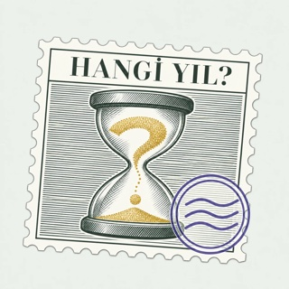

Destek
Hangi Yıl?
Hangi Yıl? her gün beş tarih pulunu sıraladığın, internetsiz çalışan bir günlük tarih bulmacasıdır. Hesap yok, reklam yok, veri toplanmaz.
Sık sorulanlar
- Pullarım kayboldu: İlerleme yalnızca telefonda saklanır. Uygulama silinip yeniden yüklendiyse kayıt da silinmiş olabilir.
- Bugünün paftası ne zaman yenilenir? Her gece 00:00'da, telefonun saatine göre. Herkes aynı gün aynı beş pulu görür.
- Serim bozuldu: Seri, günün paftasını her gün damgalayınca artar. Evinin huzuru Konak kademesine ulaşınca seri yorganı bir günlük boşluğu kapatır.
- Sıralamada görünmüyorum: Haftalık sıralama Game Center'dadır. iPhone Ayarları › Game Center'dan giriş yapın. Sıralama her pazartesi sıfırlanır.
- Bildirim gelmiyor: iPhone Ayarları › Bildirimler › Hangi Yıl? altından izni açın; saati oyunda Profil › Bildirimler'den seçin.
- Bir yıl yanlış görünüyor: Pulun adını, oyundaki yılı ve kaynağınızı yazın. Yıllar kaynaklarla doğrulandı ama düzeltmeye açığız.
Destek talebi
Yeni destek kaydı açın (ücretsiz bir GitHub hesabı gerekir). Kayıtlar herkese açıktır; adres, telefon, e-posta veya başka kişisel bilgi eklemeyin.
Teşekkürler
Müzik: “Oud music” · Andy R. Jordan · Wikimedia Commons · CC BY-SA 3.0. Yazı tipleri: Bodoni Moda, Schibsted Grotesk, IBM Plex Mono · SIL Open Font License.
Gizlilik Politikası · Sürüm 1.0